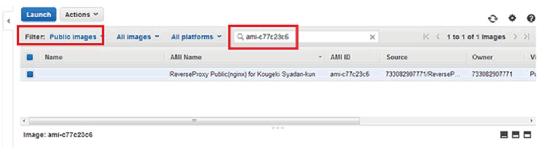
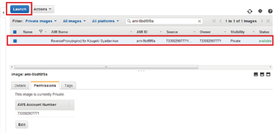
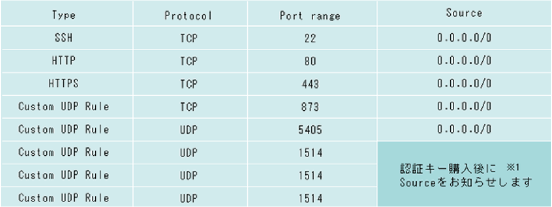
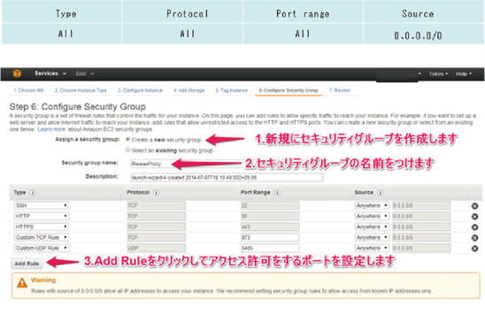
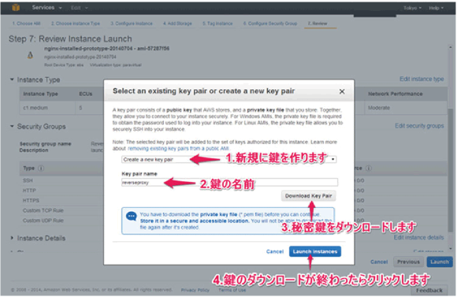

誰でもクラウド型WAFの導入・開発・第三者への販売が可能なオープンセキュリティプラットフォームです。
"誰でも遮断くんAMI"と攻撃遮断くん監視センター（シグネチャ）とを接続するために必要な
認証キー（月額￥100,000）の取得により攻撃の検知遮断が開始します。
ユーザーは開発費0円、システムの運用・保守のみでクラウド型WAFの提供が可能です。
誰でも遮断くんAMI概要
| 1. AMIの内容 | 2. 詳細仕様 |
|---|---|
|
・Amazon Linux ・nginx （yumコマンドにてインストール） ・誰でも遮断くん設定用対話型スクリプト ・攻撃遮断くんエージェント ・nginx用ログファイル取得設定済み |
・OS／Linux version 3.14.26-24.46.amzn1.x86_64 ・スワップメモリ／領域確保なし ・サーバー内時刻設定／UTC |
| 3. nginx | 4. 攻撃遮断くんエージェント |
|
3-1.インストール済みパッケージ nginx-1.6.2-1.22.amzn1.x86_64 3-2.セットアップファイル /etc/nginx/nginx.conf /etc/nginx/conf.d/default.conf /etc/nginx/conf.d/default_ssl.conf ※詳細な設定方法等はnginx公式マニュアル参照のこと http://nginx.org/ja/docs/ 3-3.対話型セットアップスクリプト 日本語版：/home/nginx/nginx-setting-scripts/set-dns.sh 英語版：/home/nginx/nginx-setting-scripts/set-dns_en.sh (関連ファイル) /home/nginx/nginx-setting-scripts/nginxsource.txt |
4-1.インストールファイルの場所 /opt/servertect-2.7 4-2.インストール方法 Install.sh からの通常インストール 4-3.動作検証状態 HTTP及びHTTPSにおける誰でも遮断くん動作、攻撃検出、 遮断・防御確認済み |
■NGINX-Plus（有償版NGINX）を利用したPrivate版も別途用意がございます。
| Private版 AMI | 通常版 AMI | |
|---|---|---|
| Private版 AMI | NGINX-Plus仕様のため、 ソフトウェア使用料金が必要 |
ソフトウエア料金は不要 |
| サポート | ベンダー(Nginx)によるサポートあり | ベンダー(Nginx)によるサポートなし |
| nginx設定内容 | Nginxの開発担当がチューニング | チューニングなし コンフィグの設定内容は有償版と同一 |
| 月額費用 |
|---|
| 100,000円（税抜） |
※課金単位5000万リクエスト毎

・AMI-ID

※1 必ず認証キー購入後に再設定をお願いいたします。

①ELB＋EC2複数台の場合
②アプライアンス型LBがある場合
③LBがない場合、または共用サーバを用いている場合
upstream backend.hostname {
server xxx.xxx.xxx.xxx:80;
server yyy.yyy.yyy.yyy:80; } ← upstream backend. hostname内にserverの設定を追加
※hostnameは(5)で設定した管理用ホスト名
upstream backend.hostname ssl{
server xxx.xxx.xxx.xxx:80;
server yyy.yyy.yyy.yyy:80; } ← upstream backend. hostname ssl内にserverの設定を追加
※hostnameは(5)で設定した管理用ホスト名
④VirtualHostを使用している場合
※nginxの設定方法に関する内容となるため、あくまで参考レベルとする
認証キー購入後に、セットアップ方法をお知らせします。
1. ご利用のDNSサービスにて、対象WEBサイトのURLへ設定を行います。
A record (誰でも遮断くんのIPアドレス)、または C record (誰でも遮断くんのホスト名) を用い、
今回作成した誰でも遮断くんへ転送されるようレコード設定を行ってください。
2. DNS情報が反映され次第、URLにアクセスし接続状態を確認します。
問題がなければ、誰でも遮断くんＡＭＩを利用した、クラウド型ＷＡＦのセットアップは完了です。